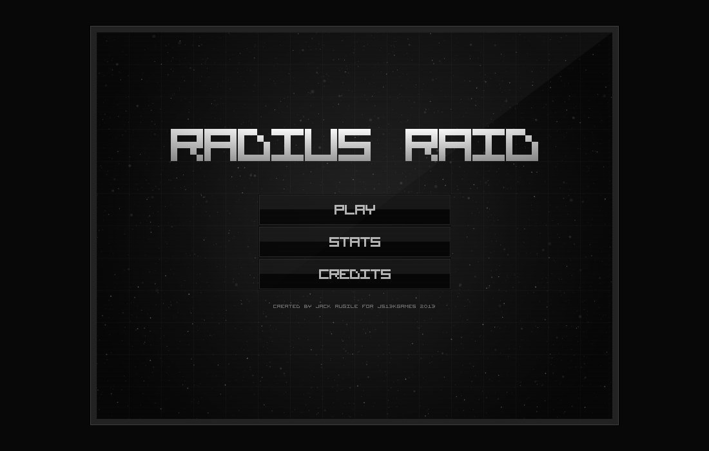
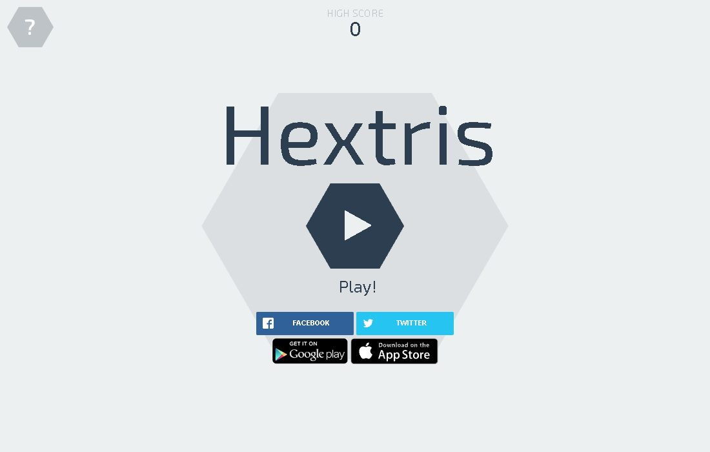

AI
智器百工
AI & TOOLS
汇集 AI 搜索、写作、编程与研究工具。
● LIVE进入 →
少一些功利主义的追求，多一些不为什么的坚持。less interests，more interest.
If you have a garden and a library, you have everything you need. 倘若你的藏书之所自有一座花园，便一无所缺。
汇集 AI 搜索、写作、编程与研究工具。
记录自己全部的诗、词、曲、现代诗与零碎句子，按时间编卷。
记录自己全部的旅行、生活与公众号旧文，按时间、地点、文脉整理分类。
属于自己的旅游地图，把历年旅行路线落在山海之间。
收录自己近年来的所有论文和研究成果。
收录自己读过的纸书、电子书与阅读笔记，让阅读成为习惯。
排盘、古籍、命例、断语与专题知识库。

